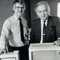
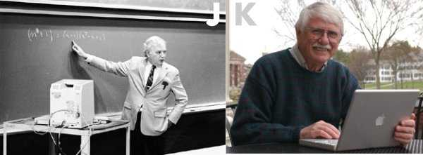

<div class="profile"><div>
  <div class="source">
BASIC (1964)
  </div>
  <div class="detail">
    
    <div class="search"><a href="http://www.google.com/cse?cx=partner-pub-6997921015773263:4467526896&ie=UTF-8&q=BASIC" target="_blank"></a> | <a href="http://en.wikipedia.org/wiki/BASIC" target="_blank">wiki</a></div>
    <div class="info"><b>BASIC</b> (an acronym which stands for Beginner's All-purpose Symbolic Instruction Code) is a family of high-level programming languages designed to be easy to use. The original Dartmouth BASIC was designed in 1964 by <a href="http://en.wikipedia.org/wiki/John_George_Kemeny" target="_blank">John George Kemeny</a> and <a href="http://en.wikipedia.org/wiki/Thomas_Eugene_Kurtz" target="_blank">Thomas Eugene Kurtz</a> at Dartmouth College in New Hampshire, USA to provide computer access to non-science students.
    <p><b>John George Kemeny</b> (Hungarian: Kemény János György) (May 31, 1926 – December 26, 1992) was a Hungarian American mathematician, computer scientist, and educator best known for co-developing[1] the BASIC programming language in 1964 with Thomas E. Kurtz. Kemeny served as the 13th President of Dartmouth College from 1970 to 1981 and pioneered the use of computers in college education. </p>
    <p><b>Thomas Eugene Kurtz</b> (born February 22, 1928) is an American computer scientist who co-developed the BASIC programming language during 1963 to 1964, together with John G. Kemeny.</p>
    </div>
  </div>
  <div class="photo">
    
  </div>
</div></div>